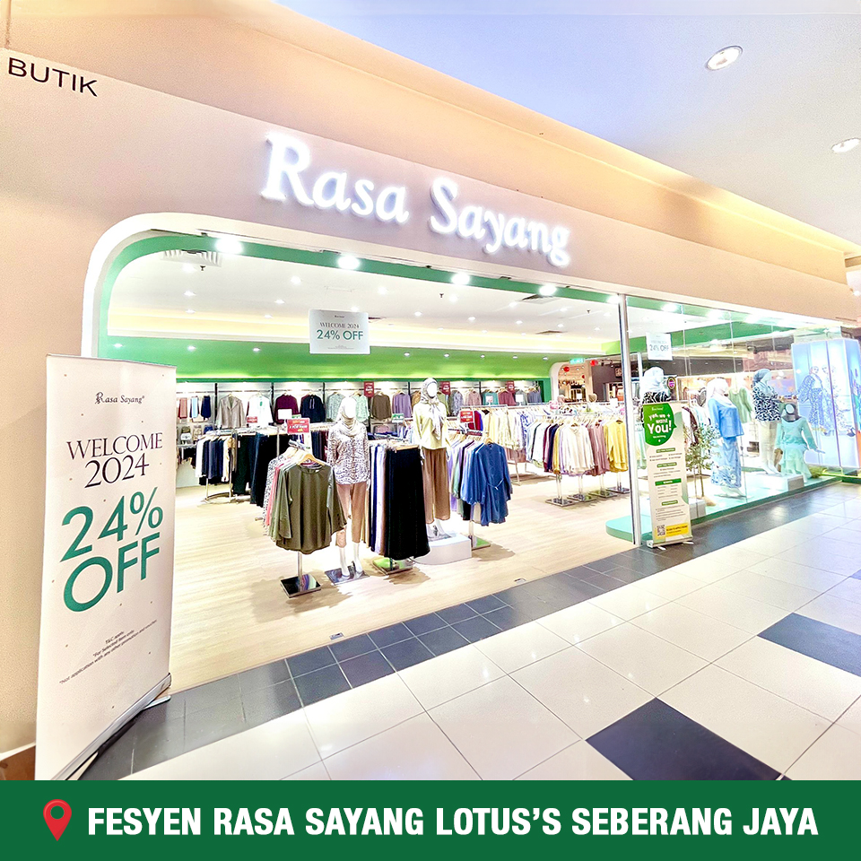

As a diligent Diploma in Library Informatics student, I bring a blend of technical expertise and a passion forinformation management to the internship role. My proficiency with digital preservation techniques,metadata management, and data organisation puts me in a good position to help the organisation makethe most of its information resources. I'm eager to put my understanding of database management, user interface design, and cataloguing to use. I'm also dedicated to improving user experiences and expanding knowledge accessibility. I want to use this internship to hone my skills even more and actively support theschool's purpose of encouraging learning and exploration. As a student pursuing a diploma in library informatics, I have created a broad skill set that combines current information technology with conventional library science. In order to ensure effective information retrieval and organisation, my competence includes skilled use of digital cataloguing systems, metadata development, and electronic resource management. I have experience with database management systems, sophisticated research with print and digital sources, and putting information literacy programmes into action. I can improve library services by making information more accessible and user-friendly thanks to my expertise in data analytics and user experience design. Furthermore, my proficiency in web building and digital archiving equips me with the ability to proficiently oversee and conserve digital collections, guaranteeing their durability and availability for upcoming generations.
My Working Experience!

I had 2 part time jobs; first was a soya drink booth where I worked from July 2022 - November 2022. Some skills I've earned by working there are:
- Customer Service Skills: My ability to provide excellent customer service was improved by interacting with consumers at the soy drink booth. I gained knowledge on how to respond to questions, resolve grievances, and guarantee client happiness.
- Communication Skills: In any line of work, effective communication is crucial. My ability to interact effectively with clients, employees, and suppliers improved as a result of working at a soy drink booth.
My second job was retail at the Rasa Sayang boutique. The experience I gained there are:
- Sales Experience: In order to increase sales, employees at clothing boutiques must actively interact with clients. I've developed experience in upselling, completing deals, and promoting products—skills that are useful in any position that involves closing sales.
- Teamwork: Working together to keep the boutique running smoothly among coworkers develops teamwork abilities. I now know how to organise work, help one another out during hectic times, and maintain a healthy work atmosphere.